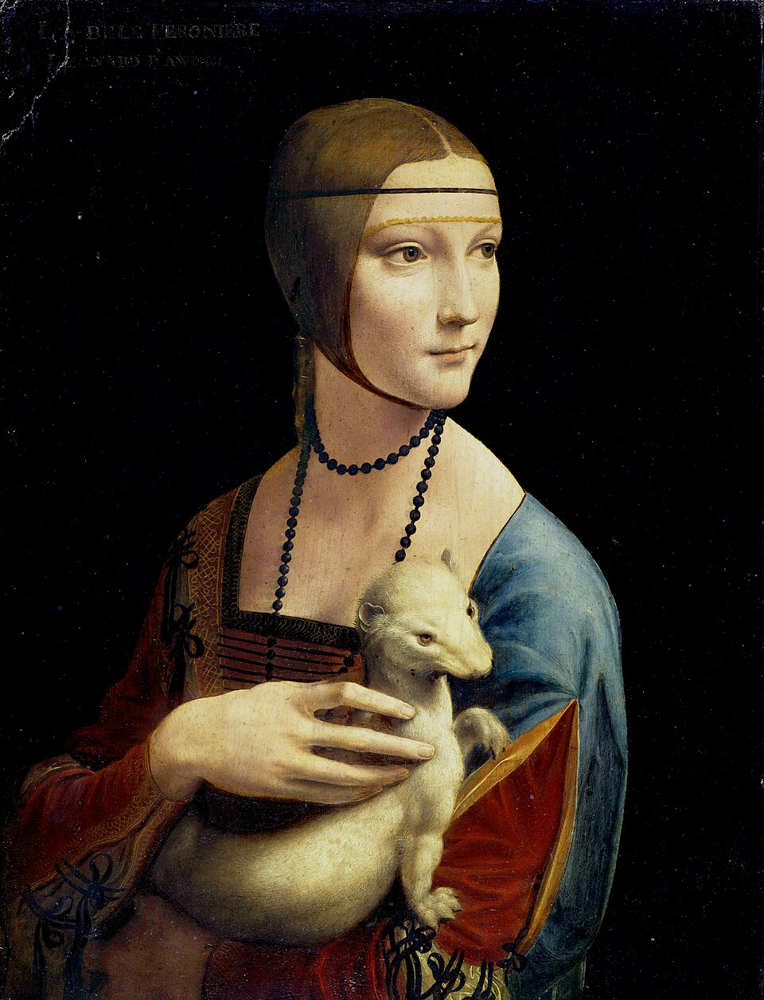

ผลงานวาดภาพที่สำคัญ

โมนาลิซา (Mona Lisa): ภาพวาดสีน้ำมันบนแผ่นไม้โปรเปกเตอร์ ภาพเหมือนของลีซา เกราร์ดีนี นวัตกรรมสำคัญคือเทคนิค สฟูมาโต (Sfumato) หรือการเกลี่ยโทนสีให้นุ่มนวลไร้รอยต่อ ทำให้รอยยิ้มและสายตาดูมีความสมจริงและมีชีวิต อาหารมื้อสุดท้าย (The Last Supper): ภาพจิตรกรรมฝาผนังในอาศรมซานตามารีอาเดลเลกราซีเอ มิลาน แสดงเหตุการณ์ตอนที่พระเยซูประกาศว่าจะมีสาวกทรยศ มีการใช้เทคนิค จุดนำสายตา (Perspective) เพื่อสร้างมิติความลึกในเชิงสถาปัตยกรรม ภาพวาดอื่นที่สำคัญ: ภาพประกาศข่าวมาดิส (Annunciation) และภาพพระแม่มารีแห่งโขดหิน (Virgin of the Rocks)